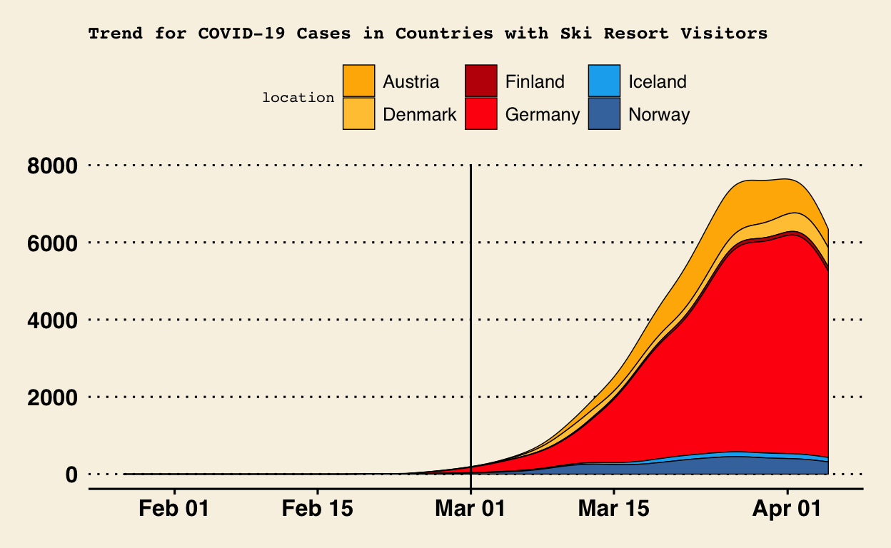

A Tale of Two Austrian Articles
As coronavirus disease (COVID-19) began spreading in earnest in the early 2020’s and led to a pandemic the likes of which has last been seen only in the Hong Kong flu pandemic in 1968.
COVID-19 is the first pandemic in history which comes at a time with widespread technology and social media usage. Normally, these help keep people safe, informed and connected. However this is a double edged sword as the same technologies can be used to amplify the pandemic and undermine global responses and create panic among citizens
WHO has thus termed COVID-19 as an infodemic. This is due to the overabundance of information online. This can result in misinformed opinions.
This blog post is aimed at investigating a few key articles in Austria that became breaking news during the time and checking the veracity of their claims.
The first article that I will be examining is one by the Guardian.
In order to truly understand whether the ski resort is ground zero, we need to first take a look at the report with an independent expert commission. This tells us how many guests were infected at Ischgl (Especially, the resort Kitzloch) and which countries they returned to.
The above map allows you to see the flow of infected tourists to their respective countries. Upon hovering over the arc, the number of infected tourists becomes visible.
If we take the ski resort truly as ground zero then let us use the date of the first diagnosis as guideline to check whether the other countries started facing their wave post this date.
The first of the Ischgl tourists by date to be diagnosed were 8 tourists from Iceland who were found to be infected on 4th March, 2020. If we take into account that they were probably out and about in the community for close to 5 days while infectious then 1st March, 2020 becomes the possibly the earliest date for their incubation to begin.

The steamgraph gives us the volume of new cases in each of the infected countries where Ischgl tourists could have acted as super spreaders. With the exception of Germany, the rest of the countries had nill or negligible cases as of March 1st, 2020.
Within 14 days of the tourists hitting home soil, we can see cases multiply in these countries which gives firm ground to the thought process that this ski resort may have acted as ground zero for the very first wave of COVID-19 across Europe.
A lawsuit has been brought out against the Austrian government for mismanagement of tourists and causing the COVID-19 wave across 45 countries. Approximately 6000 people have sued the government and from the above visualizations, they do seem to have valid ground to do so.
The second article I will be examining is by The Local.
The Austrian government took misinformed measures in the previous article without understanding the severity of COVID-19. Let us take a look at the measures undertaken during holiday season at the end of year to check if they conducted themselves in a better manner.
The strict restrictions were eased as of December 6th, 2020 just around the weekend before holiday season well and truly started with complete easing of restrictions for the dates 25th, 26th and 31st.
The government stated that they will be using mass testing as a strategy to combat the spread of COVID-19 among the populace.
The above line plot shows that on the day of easing restrictions the daily number of cases were on the lower side compared to previous weeks with 2741 new cases on the day. While this is still a substantial number, it is a much small number compared to the daily cases within the period of November 9th to 16th.
The above line plot shows us that despite completely easing restrictions for Christmas and New Years as promised, no spike can be seen for 2 whole weeks post the events. Thus while the number of cases didn’t bottom out, it didn’t sky rocket either, allowing people to celebrate their holidays in a relatively peaceful manner.
The Austrian government seems to have learned from it’s mistakes this time around and utilized the information to it’s benefit.
How does Covid-19 compare to Past pandemics? Gavi, the Vaccine Alliance. (n.d.). Retrieved September 16, 2021, from https://www.gavi.org/vaccineswork/how-does-covid-19-compare-past-pandemics.
World Health Organization. (n.d.). Managing the COVID-19 INFODEMIC: Promoting healthy behaviours and mitigating the harm from misinformation and disinformation. World Health Organization. Retrieved September 16, 2021, from https://www.who.int/news/item/23-09-2020-managing-the-covid-19-infodemic-promoting-healthy-behaviours-and-mitigating-the-harm-from-misinformation-and-disinformation.
Guardian News and Media. (2020, September 5). ‘Everyone was drenched in THE VIRUS’: Was this Austrian ski resort A Covid-19 ground zero? The Guardian. Retrieved September 16, 2021, from https://www.theguardian.com/world/2020/sep/05/everyone-was-drenched-in-the-virus-was-this-austrian-ski-resort-a-covid-19-ground-zero.
Hersche, D. I. B., Kern, U.-P. D. W. V., Stuber- Berries, D. N., Rohrer, D. R., Trkola, D. A., & Weber, U.-P. D. K. (2020, October 12). BERICHT DER UNABHÄNGIGEN EXPERTENKOMMISSION MANAGEMENT COVID-19-PANDEMIE TIROL. Vienna; Consumer Protection Association (VSV). https://www.verbraucherschutzverein.eu/wp-content/uploads/2021/08/Expertenkommission-Bericht.pdf
BBC. (2020, September 23). Ischgl: Austria sued Over tyrol ski resort’s COVID-19 OUTBREAK. BBC News. Retrieved September 16, 2021, from https://www.bbc.com/news/world-europe-54256463.
The Local. (2020, December 7). Everything you need to know about AUSTRIA’S Latest Coronavirus rules. The Local Austria. Retrieved September 16, 2021, from http://www.thelocal.at/20201207/everything-you-need-to-know-about-austrias-new-coronavirus-measures/.
Guardian News and Media. (2020, November 27). ‘A Christmas not like others’: Europe wrestles with FESTIVE Covid rules. The Guardian. Retrieved September 15, 2021, from https://www.theguardian.com/world/2020/nov/27/christmas-not-like-others-europe-wrestles-festive-covid-rules.
Wickham et al., (2019). Welcome to the tidyverse. Journal of Open Source Software, 4(43), 1686, https://doi.org/10.21105/joss.01686
Garrett Grolemund, Hadley Wickham (2011). Dates and Times Made Easy with lubridate. Journal of Statistical Software, 40(3), 1-25. URL https://www.jstatsoft.org/v40/i03/.
Yihui Xie (2021). knitr: A General-Purpose Package for Dynamic Report Generation in R. R package version 1.31.
Yihui Xie (2015) Dynamic Documents with R and knitr. 2nd edition. Chapman and Hall/CRC. ISBN 978-1498716963
Yihui Xie (2014) knitr: A Comprehensive Tool for Reproducible Research in R. In Victoria Stodden, Friedrich Leisch and Roger D. Peng, editors, Implementing Reproducible Computational Research. Chapman and Hall/CRC. ISBN 978-1466561595
Jeffrey B. Arnold (2021). ggthemes: Extra Themes, Scales and Geoms for ‘ggplot2’. R package version 4.2.4. https://CRAN.R-project.org/package=ggthemes
C. Sievert. Interactive Web-Based Data Visualization with R, plotly, and shiny. Chapman and Hall/CRC Florida, 2020.
David Sjoberg (2021). ggstream: Create Streamplots in ‘ggplot2’. R package version 0.1.0. https://CRAN.R-project.org/package=ggstream
David Cooley (2020). mapdeck: Interactive Maps Using ‘Mapbox GL JS’ and ‘Deck.gl’. R package version 0.3.4. https://CRAN.R-project.org/package=mapdeck